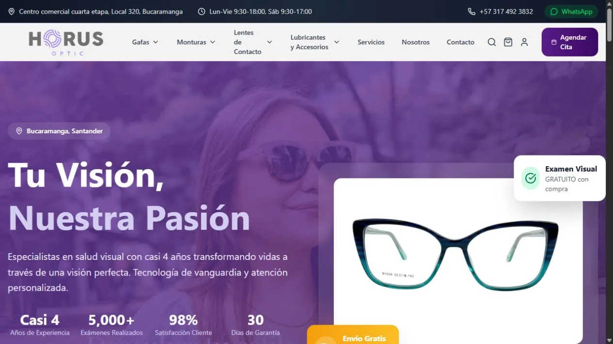

Horus Optic
Una óptica, toda una experiencia digital. Catálogo, carrito, citas y administración en una misma plataforma.
An optical store, a complete digital experience. Catalogue, cart, appointments and administration in one platform.
Detrás del proyectoBehind the project
Del catálogo a la operación
From catalogue to operations
Desarrollé el e-commerce y su panel administrativo. Conecté catálogo, carrito y checkout con Wompi, autenticación y datos en Supabase, además de citas y correos transaccionales.
I developed the e-commerce website and its admin panel. I connected catalogue, cart and Wompi checkout with Supabase authentication and data, alongside appointments and transactional emails.
Mi aporte: desarrollo full-stack, gestión de productos, marcas e imágenes y despliegue en Vercel.
My contribution: full-stack development, product, brand and image management, and Vercel deployment.
Explorar tiendaExplore store ↗